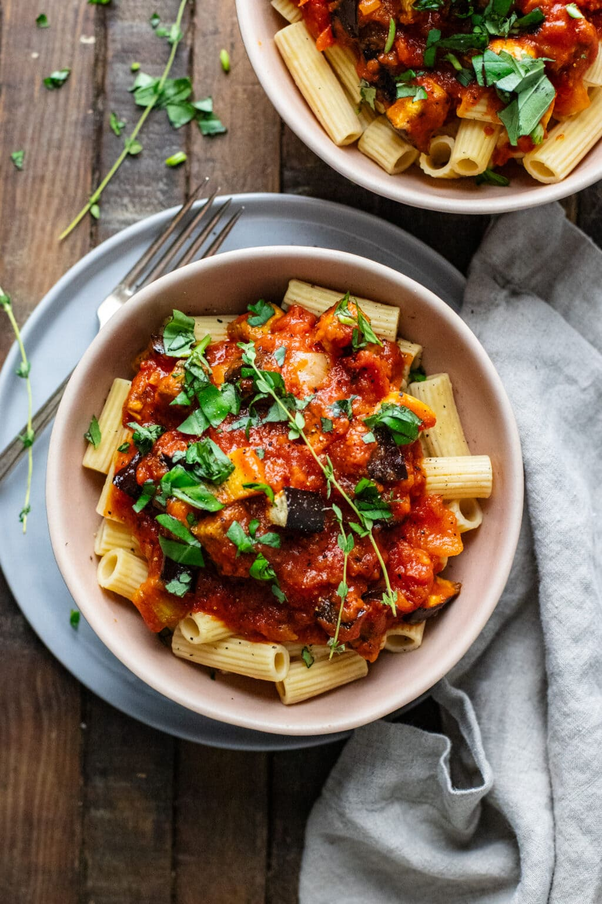

Eggplant Pasta

Ingridients
Eggplant
Yellow onion
Garlick
Pasta
Tomato suace
Spices
Oil
Steps
-
Lay chopped eggplant and onion on a sheet pan and toss
with with oil, salt, and garlic powder.
Roasted 400F for 20-25 minutes - flip halfway through.
-
While eggplant is roasting, bring pot of well
salted water to a boil for pasta. Cook noodles until “al dente” in
texture.
-
Then heat up sauce in a pan and fold in roasted eggplant and onions.
-
Serve sauce with pasta noodles and fresh basil.
Back to recipes